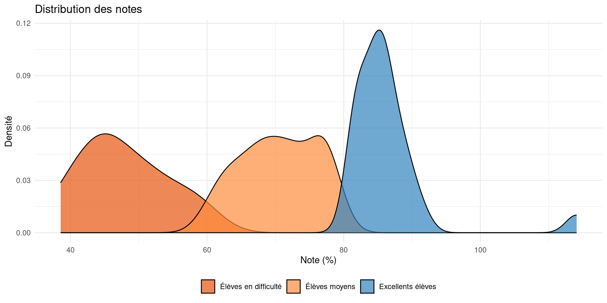
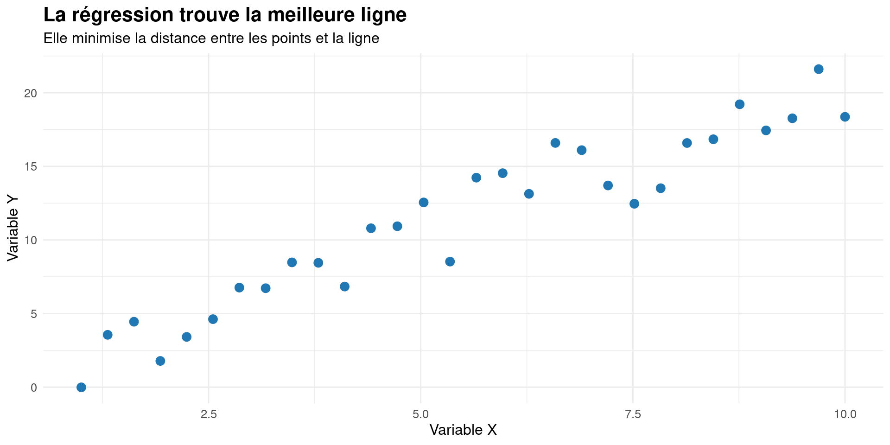
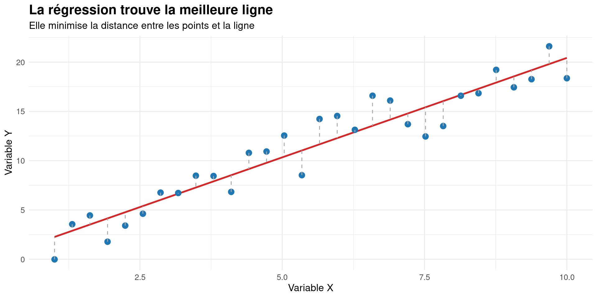
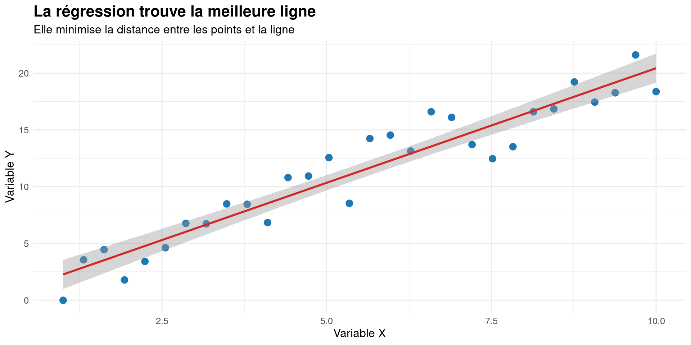

%%{init: {"theme": "base", "themeVariables": {"primaryColor": "#f4f4f4", "textColor": "#333", "lineColor": "#666"}}}%%
mindmap
root("Intelligence")
("Verbale")
("Vocabulaire")
("Compréhension")
("Mathématique")
("Calcul")
("Logique")
("Spatiale")
("Visualisation")
("Orientation")
("Sociale")
("Empathie")
("Communication")
Les mesures et les analyses statistiques
Introduction aux mégadonnées en sciences sociales
Laurence-Olivier M. Foisy
Université de Montréal
Cours 5
- Retour sur le dernier cours
- Le prochain cours
- Mesurer des variables latentes
- Introduction à la régression linéaire
Les variables latentes
Introduction
Qu’est-ce qu’une variable latente?
- Une caractéristique qui ne peut pas être mesurée directement
- Doit être inférée à partir d’autres variables observables
- Concept central en sciences sociales
Exemple : Mesurer l’intelligence
Défi de mesure
Pourquoi c’est complexe?
- Abstraction : Les concepts sont souvent abstraits
- Multidimensionnalité : Plusieurs aspects à considérer
- Subjectivité : Interprétation variable selon le contexte
L’examen d’histoire
Dans une classe typique…

L’examen d’histoire : 5 questions
Notre hypothèse
- Chaque question mesure la compétence en histoire
- Les bons élèves devraient bien répondre
- Les élèves moyens répondront moyennement bien
- Les élèves en difficulté auront plus de mal
Distribution typique d’un examen
Distribution par groupes d’élèves

Question 1 : Causes de la guerre
“Quels événements ont directement mené au déclenchement de la Seconde Guerre Mondiale en Europe?”
Question 2 : Analyse stratégique
“Expliquez pourquoi l’opération Barbarossa a été un tournant décisif dans la guerre.”

Question 3 : Impact économique
“Analysez comment la mobilisation industrielle des États-Unis a influencé l’issue de la guerre.”
Question 4 : Conséquences géopolitiques
“Évaluez comment les accord de Yalta ont redessiné la carte politique de l’Europe.”
Question 5 : Cigares de Churchill
“Quelle était la marque de cigares préférée de Winston Churchill?”

Une question suspecte ü§î
üö® Probl√®me!
Cette question mesure-t-elle vraiment la compétence en histoire?
Ou mesure-t-elle autre chose?
- Culture populaire?
- Connaissance des cigares?
Ce qui cloche…
- Les meilleurs élèves échouent mystérieusement
- Les élèves en difficulté excellent soudainement
- La question ne mesure pas la compétence en histoire
En résumé
Une bonne question d’histoire devrait:
- Tester la compréhension historique
- Montrer une distribution “normale”
- Discriminer selon la compétence
Une question problématique peut:
- Tester des connaissances non pertinentes
- Montrer une distribution inversée
- Ne pas refléter la compétence visée
Solution : Analyse factorielle
- Détecte automatiquement ces anomalies
- Vérifie si toutes les questions mesurent la même compétence
- Aide à améliorer la qualité des examens
- Guide la révision des questions problématiques
L’analyse factorielle compare toutes les questions

Exemple concret : L’attitude politique
%%{init: {"theme": "base", "themeVariables": {"primaryColor": "#f4f4f4", "textColor": "#333", "lineColor": "#666"}}}%%
graph TD
A["Attitude Politique<br/>(Variable Latente)"]
classDef latent fill:#e6f3ff,stroke:#3182bd,stroke-width:2px;
class A latent;
Exemple concret : L’attitude politique
%%{init: {"theme": "base", "themeVariables": {"primaryColor": "#f4f4f4", "textColor": "#333", "lineColor": "#666"}}}%%
graph TD
A["Attitude Politique<br/>(Variable Latente)"] --> B["Opinion sur<br/>l'Immigration"]
A --> C["Position sur<br/>l'Économie"]
A --> D["Vision de<br/>l'Environnement"]
classDef latent fill:#e6f3ff,stroke:#3182bd,stroke-width:2px;
classDef indicator fill:#fff5eb,stroke:#e6550d,stroke-width:2px;
class A latent;
class B,C,D indicator;
Exemple concret : L’attitude politique
%%{init: {"theme": "base", "themeVariables": {"primaryColor": "#f4f4f4", "textColor": "#333", "lineColor": "#666"}}}%%
graph TD
A["Attitude Politique<br/>(Variable Latente)"] --> B["Opinion sur<br/>l'Immigration"]
A --> C["Position sur<br/>l'Économie"]
A --> D["Vision de<br/>l'Environnement"]
B --> E["Question 1:<br/>Politique migratoire"]
B --> F["Question 2:<br/>Intégration"]
C --> G["Question 3:<br/>Impôts"]
C --> H["Question 4:<br/>Intervention État"]
D --> I["Question 5:<br/>Climat"]
D --> J["Question 6:<br/>Régulation"]
classDef latent fill:#e6f3ff,stroke:#3182bd,stroke-width:2px;
classDef indicator fill:#fff5eb,stroke:#e6550d,stroke-width:2px;
classDef question fill:#f0f0f0,stroke:#636363,stroke-width:1px;
class A latent;
class B,C,D indicator;
class E,F,G,H,I,J question;
Exemple concret : L’attitude politique
%%{init: {"theme": "base", "themeVariables": {"primaryColor": "#f4f4f4", "textColor": "#333", "lineColor": "#666"}}}%%
graph TD
A["Attitude Politique<br/>Gauche!"] --> B["Opinion sur<br/>l'Immigration"]
A --> C["Position sur<br/>l'Économie"]
A --> D["Vision de<br/>l'Environnement"]
B --> E["Question 1:<br/>Politique migratoire"]
B --> F["Question 2:<br/>Intégration"]
C --> G["Question 3:<br/>Impôts"]
C --> H["Question 4:<br/>Intervention État"]
D --> I["Question 5:<br/>Climat"]
D --> J["Question 6:<br/>Régulation"]
E --> K["En Faveur de plus d'immigrants"]
F --> L["En Faveur de l'intégration"]
G --> M["En Faveur de l'augmentation"]
H --> N["En Faveur de plus d'intervention"]
I --> O["Enjeu important"]
J --> P["En Faveur de plus de régulation"]
classDef latent fill:#e6f3ff,stroke:#3182bd,stroke-width:2px;
classDef indicator fill:#fff5eb,stroke:#e6550d,stroke-width:2px;
classDef question fill:#f0f0f0,stroke:#636363,stroke-width:1px;
class A latent;
class B,C,D indicator;
class E,F,G,H,I,J,K,L,M,N,O,P question;
Un exemple concret
Les Rednecks
- Est-ce que l’éducation influence la probabilité d’être un “redneck”?
- Aucun question ne demande directement si quelqu’un est un “redneck”
- Mais on peut inférer ce statut à partir d’autres variables
- Créer une variable de “redneckitude”
Solution : Les échelles de mesure
Comment procéder?
- Identifier les dimensions clés
- Décomposer le concept
- Définir les aspects mesurables
- Créer des indicateurs
- Questions précises
- Observations concrètes
- Valider l’échelle
- Fiabilité : Tests statistiques
- Validité : Théorique
%%{init: {"theme": "base", "themeVariables": {"primaryColor": "#f4f4f4", "textColor": "#333", "lineColor": "#666"}}}%%
graph LR
A["<b>Fréquence d'aller chasser</b><br/>0 - Jamais<br/>0.5 - Des fois<br/>1 - Souvent"] --> B["<b>Redneckitude</b><br/>0 - Pas redneck<br/>0.5 - Moyen redneck<br/>1 - Très redneck"]
C["<b>Possède des armes à feu</b><br/>0 - Aucune<br/>0.5 - Un peu<br/>1 - Beaucoup"] --> B
D["<b>Conduit un pickup</b><br/>0 - non<br/>1 - oui"] --> B
classDef latent fill:#e6f3ff,stroke:#3182bd,stroke-width:2px;
classDef indicator fill:#fff5eb,stroke:#e6550d,stroke-width:2px;
class B latent;
class A,C,D indicator;
Évaluation de la qualité
Critères essentiels
%%{init: {"theme": "base", "themeVariables": {"primaryColor": "#f4f4f4", "textColor": "#333", "lineColor": "#666"}, "flowchart": {"nodeSpacing": 200, "rankSpacing": 150, "diagramPadding": 50, "htmlLabels": true}}}%%
graph LR
A[<div style='width: 200px'>Qualité de<br/>la mesure</div>] --> B[<div style='width: 150px'>Fiabilité</div>]
A --> C[<div style='width: 150px'>Validité</div>]
Critères essentiels
%%{init: {"theme": "base", "themeVariables": {"primaryColor": "#f4f4f4", "textColor": "#333", "lineColor": "#666"}, "flowchart": {"nodeSpacing": 200, "rankSpacing": 150, "diagramPadding": 50, "htmlLabels": true}}}%%
graph LR
A[<div style='width: 200px'>Qualité de<br/>la mesure</div>] --> B[<div style='width: 150px'>Fiabilité</div>]
A --> C[<div style='width: 150px'>Validité</div>]
B --> D[<div style='width: 150px'>Statistique</div>]
Critères essentiels
%%{init: {"theme": "base", "themeVariables": {"primaryColor": "#f4f4f4", "textColor": "#333", "lineColor": "#666"}, "flowchart": {"nodeSpacing": 200, "rankSpacing": 150, "diagramPadding": 50, "htmlLabels": true}}}%%
graph LR
A[<div style='width: 200px'>Qualité de<br/>la mesure</div>] --> B[<div style='width: 150px'>Fiabilité</div>]
A --> C[<div style='width: 150px'>Validité</div>]
B --> D[<div style='width: 150px'>Statistique</div>]
C --> E[<div style='width: 150px'>Théorique</div>]
La fiabilité
Comment la mesurer?
Trois mesures statistiques
- Alpha de Cronbach
- Première valeur propre (Eigenvalue)
- Coefficient de saturation (Factor loading)
L’Alpha de Cronbach
Qu’est-ce que c’est?
- Une mesure de la cohérence interne d’un ensemble de questions
- Indique si les questions mesurent bien la même chose
- Varie entre 0 et 1 (plus c’est proche de 1, meilleur c’est)
Exemple Simple
- Imaginons un questionnaire sur la satisfaction au travail avec 4 questions :
- “J’aime mon travail”
- “Je suis heureux au bureau”
- “Mon travail me satisfait”
- “Je m’épanouis dans mon travail”
- Si les réponses sont cohérentes entre elles → Alpha élevé
- Si les réponses sont contradictoires → Alpha faible
En pratique
- Alpha > 0.6 : Acceptable
- Alpha > 0.7 : Bon
- Alpha > 0.8 : Excellent
La Première Valeur Propre (First Eigenvalue)
Qu’est-ce que c’est?
- Indique la force du concept principal mesuré par vos questions
- Plus elle est élevée, plus vos questions mesurent un concept unique et fort
Analogie Simple
- Imaginez que vous prenez une photo de groupe :
- Si tout le monde regarde dans la même direction → Forte première valeur propre
- Si chacun regarde dans une direction différente → Faible première valeur propre
En pratique
- Valeur > 1 : Acceptable
- Plus la valeur est élevée, plus c’est fiable
- Indique qu’il y a un “facteur dominant” dans vos questions
Le Coefficient de Saturation (Factor Loading)
Qu’est-ce que c’est?
- Mesure la contribution de chaque question au concept général
- Indique si chaque question est pertinente
Exemple Simple
- Pour un questionnaire sur “l’amour des chats” :
- “J’aime caresser les chats” → Fort coefficient (pertinent)
- “Je mange des pâtes” → Faible coefficient (non pertinent)
En pratique
- Coefficient > 0.3 : Acceptable
- Permet d’identifier les questions à garder ou à supprimer
- Plus le coefficient est élevé, plus la question est pertinente
En Résumé
Les trois mesures travaillent ensemble
- Alpha de Cronbach : Cohérence globale
- Première valeur propre : Force du concept principal
- Coefficient de saturation : Pertinence de chaque question
Utilisation pratique
- Alpha de Cronbach : > 0.6
- Première valeur propre (Eigenvalue) : > 1
- Coefficient de saturation (Factor loading) : > 0.3
Comment faire
1. Installer le package sondr
Comment faire ?
2. Charger vos données
3. Déterminer les variables potentielles
r$> names(df)
[1] "ses_gender" "ses_income" "ses_housing" "ses_language"
[5] "ses_religion" "ses_education" "ses_ethnicity" "ses_immigrant"
[9] "ses_skin_tone" "lifestyle_pets" "lifestyle_album" "lifestyle_movie"
[13] "lifestyle_prius" "ses_postal_code" "lifestyle_coffee" "lifestyle_gpt_freq"
[17] "lifestyle_transport" "lifestyle_yoga_freq" "lifestyle_guns_number" "lifestyle_classic_meal"
[21] "lifestyle_fishing_freq" "lifestyle_hunting_freq" "ses_sexual_orientation" "lifestyle_eat_meat_freq"
[25] "lifestyle_clothing_style" "lifestyle_motorized_freq" "lifestyle_videogame_freq" "lifestyle_alcohol_favorite"
[29] "ses_religiosity_importance" "lifestyle_nonmotorized_freq" "lifestyle_watch_soccer_freq" "lifestyle_movie_barbenheimer"
[33] "lifestyle_watch_baseball_freq" "lifestyle_volunteeringsocial_freq"Comment faire ?
4. Cleaner les variables à évaluer pour qu’elles soient numériques
df_clean <- data.frame(id = 1:nrow(df))
# Variable de fréquence de pêche
table(df$lifestyle_fishing_freq)
df_clean$lifestyle_fishing_freq_scale<- NA
df_clean$lifestyle_fishing_freq_scale[df$lifestyle_fishing_freq == "Never"] <- 0
df_clean$lifestyle_fishing_freq_scale[df$lifestyle_fishing_freq == "Almost never"] <- 0.25
df_clean$lifestyle_fishing_freq_scale[df$lifestyle_fishing_freq == "Sometimes"] <- 0.5
df_clean$lifestyle_fishing_freq_scale[df$lifestyle_fishing_freq == "Often"] <- 0.75
df_clean$lifestyle_fishing_freq_scale[df$lifestyle_fishing_freq == " Very often"] <- 1
table(df_clean$lifestyle_fishing_freq_scale, useNA = "ifany")
saveRDS(df_clean, "data_clean.rds")Comment faire ?
2. Isoler les variables à évaluer
3. Conditions à respecter
- Un dataframe contenant uniquement les variables à évaluer
- AUCUNE valeur manquante
- La même échelle de mesure pour toutes les questionc (0-1)
- La même orientation pour tous les items (positif ou négatif)
Comment faire ?
Comment faire ?
La validité?
Comment la mesurer?
- Concordance avec la théorie
- Les questions mesurent-elles bien le concept?
- Les résultats sont-ils cohérents avec la littérature?
- Concordance avec d’autres mesures
- Les résultats sont-ils similaires à d’autres échelles?
- Les résultats sont-ils stables dans le temps?
Faire l’échelle
Si la fiabilité et la validité sont acceptables
df$scale_redneck
Conclusion
- Les variables latentes sont omniprésentes en sciences sociales
- La mesure nécessite une approche systématique
- La validation est cruciale pour la qualité
Regression linéaire
\[ \begin{aligned} y &= \beta_0 + \beta_1x + \epsilon \\ \end{aligned} \]
Qu’est-ce que c’est?
- Un outil pour comprendre la relation entre deux variables
- Permet de prédire une variable à partir d’une autre
- Trouve la “meilleure ligne” qui représente cette relation
Visualisation de la régression

Comment ça marche?
Comment ça marche?
Comment ça marche?
Pourquoi utiliser la régression?
- Comprendre les relations entre variables
- Prédire des valeurs futures
- Tester des hypothèses scientifiques
- Contrôler pour plusieurs facteurs à la fois
Régression


Points clés à retenir
- Toujours explorer vos données avant l’analyse
- Interpréter les résultats avec prudence
- Visualiser pour mieux comprendre
La grammaire des graphiques
Les composants de base
%%{init: {"theme": "base"}}%%
graph LR
A[Données] --> B[Aesthetics]
B --> C[Géométries]
C --> D[Facettes]
D --> E[Thèmes]
Structure d’un graphique ggplot2
Types de graphiques fondamentaux
Le nuage de points
L’histogramme
Le graphique en barres
Personnalisation
Les couleurs
Les thèmes
# Thème minimal
ggplot(data, aes(x = age, y = revenu)) +
geom_point() +
theme_minimal()
# Thème personnalisé
ggplot(data, aes(x = age, y = revenu)) +
geom_point() +
theme_minimal() +
theme(
plot.title = element_text(size = 16, face = "bold"),
axis.title = element_text(size = 12),
legend.position = "bottom"
)Graphiques avancés
Facettes
Combinaison de géométries
Points clés à retenir
- ggplot2 utilise une grammaire des graphiques cohérente
- Construire les graphiques couche par couche
- La personnalisation est puissante mais simple
- Toujours penser à la lisibilité
Comment ça marche?
L’analyse factorielle vérifie
Nos résultats